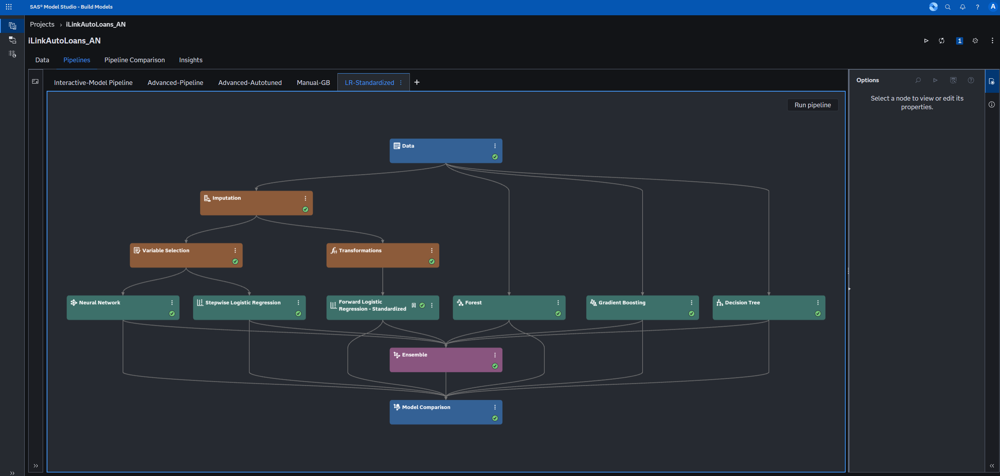
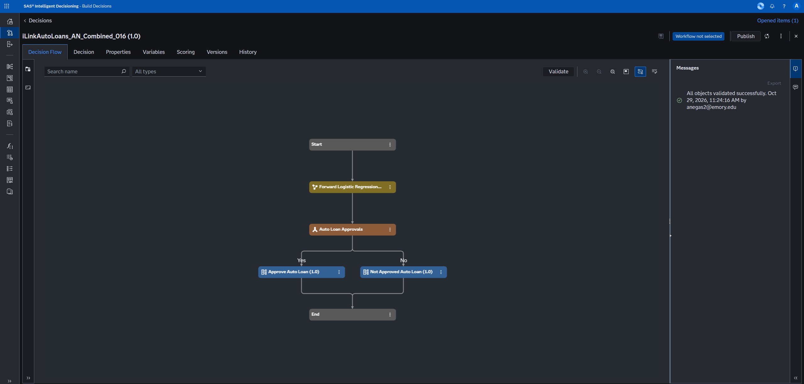

SAS Hackathon 2026 · Student Track
Auto Loan
Credit Risk
Default-risk modeling and loan approval decisions using SAS Viya and synthetic loan data.
Overview
This project estimates borrower default risk and uses the predictions to evaluate loan approval policies for the fictional iLink Capital Bank in the SAS Hackathon 2026 Student Track.
The work covers model comparison, model registration, decision-flow testing, application scoring, and submission verification. Risk-ranking performance and approval-policy results are evaluated separately.
- SAS Visual Analytics
- Model Studio
- Model Manager
- Intelligent Decisioning
- Python
Data & workflow
The modeling dataset contains 100,000 historical synthetic loans. Candidate models use the same stratified split: 60,000 training records and 40,000 validation records. Application identifiers are retained for matching outputs and excluded from predictors.
Explore the data
Review loan characteristics and an initial decision-tree model in Visual Analytics.
Compare models
Evaluate six model families in Model Studio using ranking performance, probability error, and fitting diagnostics.
Register & score
Register the selected model in Model Manager and connect it to an approval flow in Intelligent Decisioning.
Verify outputs
Audit application coverage, probabilities, approval assignments, and submission format before uploading to Kaggle.




Results
The selected Forward Logistic Regression model recorded a validation AUC of 0.7992 on 40,000 loans. AUC measures how well predictions rank borrowers by default risk; it is not classification accuracy.
Scoring verification
The completed decision flow scored 100,000 public applications. The published audit records:
- 100,000 unique, nonmissing application identifiers and exact input coverage
- No missing or invalid probabilities
- Binary approval values on every row
- No disagreements with the saved decision rule
Recorded public scores
| Submission | Milestone | Public score |
|---|---|---|
| Initial cutoff, PD < 0.13 | 48.168 | |
| Value-only | 47.082 | |
| Combined, PD < 0.13 | 49.548 | |
| Combined, PD < 0.14 | 50.005 |
The combined 0.14 policy improved the initial public score by 1.837 points using the same registered model. These are recorded public scores, not final rankings or realized bank profit.
Evaluation limits
The validation cohort informed model and policy selection, so it is not an independent final test. Probability calibration and borrower-group fairness have not been assessed. Public leaderboard results may differ from the private evaluation results.
Project status
This page covers my SAS Hackathon 2026 work. On October 29, I also wrote and tested a combined 0.16 decision flow and a Python script to check its scoring output.
The repository includes the SAS workflow, screenshots, approval-rule expression, Python policy analysis, and validation tests. Competition datasets and applicant-level outputs are kept locally.
View public repository